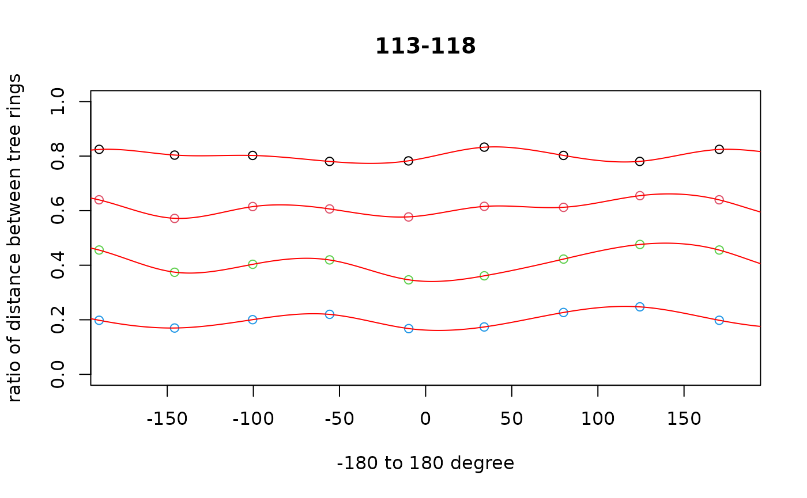
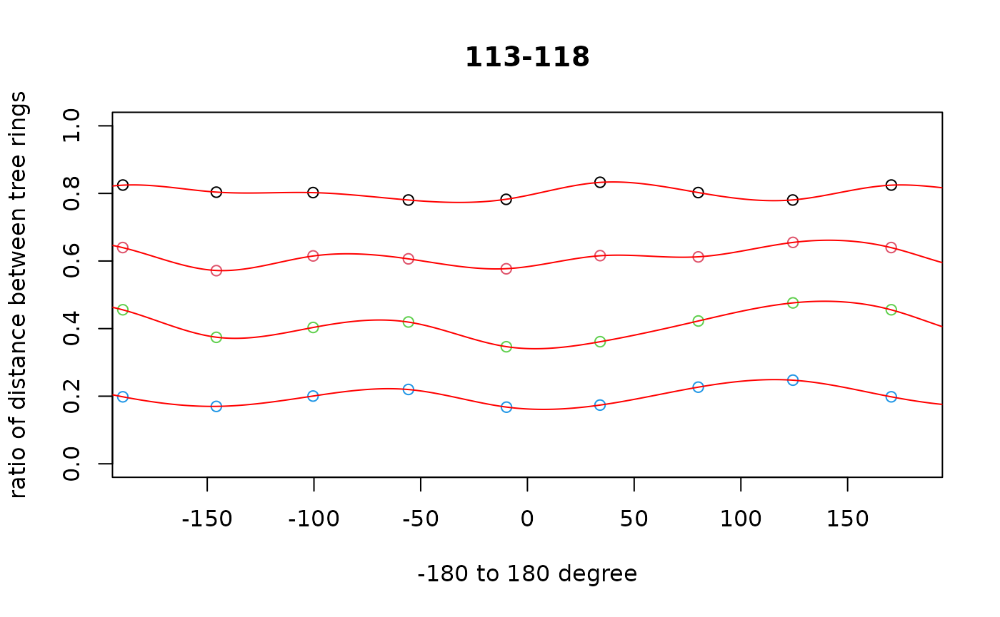

TreeRingShape
Megumi ISHIDA
2024-04-03
Source:vignettes/jp/TreeRingShape_jp.Rmd
TreeRingShape_jp.Rmdこのパッケージは幹の円板の全年輪の形状を効率的に記録するためのものです。 GISソフト(Qgis)で入力した放射計測線上の年輪ポイント( P )と代表年輪ライン( L )から、代表年輪間の年輪( L2 )を補完します。 「代表年輪」とは、外周および円板の形を特徴づける年輪で形が真円に近いほど少なくてすみます。 年輪は髄を中心として同心円状に成長しますが、その形状は真円ではありません。 これまでの年輪解析や年輪年代学では、年輪幅から樹木の成長を評価したものが 多いですが、近年では画像解析の技術の発達に伴い年輪面積によって成長評価しよ うとする研究も増えてきています。これらの研究は、殆ど年輪が明瞭な針葉樹 人工林の円板試料が調査対象でしたが、本パッケージでは年輪形状がより複雑 な天然林の樹木の年輪形状の記録も可能となります。 ただし、現状年輪形状に関する情報を手入力する必要があるため、 多くの労力を要することをお断りしておきます。

Table 1. classTreeRingShape : TR <- TreeRingShape()
| Slot | R | Qgis |
|---|---|---|
| Input | ||
| P | data frame of Tree Ring Points | Points shape, field(id,ring) |
| P_filename | shape file name of tree ring points | *.shp |
| P_id.tag | column name of id in shape file (P) | default ‘id’ |
| P_ring.tag | column name of ring no.(ordinaly year,outermost=0) | default ‘ring’ |
| L | list of Representative Tree Ring Lines | Lines shape, field(ring) |
| L_filename | shape file name for representative tree ring lines (L) | *.shp |
| L_ring.tag | column name of ring no.(ordinaly year,outermost=0) in shape file (L) | default ‘ring’ |
| Append | ||
| L2 | list of All Tree Ring Lines including interpolated lines | Lines shape, field(ring) |
| L2_filename | file name of shape file (L2) for tree ring lines interpolated | *.shp |
| etc. | see classTreeRingShape for details |
Usage
** sample data of ‘Abies_277_h400’ can be download from ** https://www.sanchikanri.com/treering/Abies_277_h400.zip
library(TreeRingShape)
TR.<-TreeRingShape( P_filename=‘Abies_277_h400_TreeRing_Points.shp’, L_filename=‘Abies_277_h400_TreeRing_Representative.shp’, L2_filename=‘Abies_277_h400_TreeRing.shp’, P_id.tag=‘id’,P_ring.tag=‘ring’, L_ring.tag=‘ring’)
実行後、 Append (Table 1)
のデータが追加されます。
手 順
I. 円板の処理
幹の円板を採取します。 枝、腐り、割れのある部分は極力避けます。
年輪がよく見えるようになるまで研磨します。
鉛筆で髄から原則8方向に線を描きます。以下、この線を 放射計測線 と呼びます。
形成層(樹皮と接する材の外周)を0とし内側に向かって年輪を数え、マーキングしていきます。
全放射計測線上の年輪数が一致していることを確認します。
鉛筆で代表的な年輪のラインをトレースしておきます。 年輪数が多い、年輪数が不明瞭な部分がある場合など、作業効率が良くなります。
2. レイヤの追加
年輪画像ラスターを取り込みます(TreeRing***.tif)。
年輪ポイントの新規シェープファイルレイヤーの作成(TreeRingPoints*.shp) 属性テーブルに整数integerで id と ring** の項目を設けます。
年輪ラインの新規シェープファイルレイヤーの作成(TreeRingLines*.shp) 属性テーブルに整数integerで ring** の項目を設けます。
3.手作業による年輪座標の入力
年輪ポイント idは放射計測線の番号、もしくは修正ポイントグループの番号、 ringは通常、形成層を0とし内側に向かって数えた年輪数です。 放射計測線上のすべての年輪にポイントを打ちます。 年輪補完を実施した後、年輪がずれている場合、年輪が必ず通過する補正点を追加入力します。
代表年輪ライン 外周および円板の形を特徴づける年輪のラインをなぞりながら年輪の座標を入力します。 形成層を0とし内側に向かって数えた年輪数です。
IV .TreeRingShapeによる解析
library(TreeRingShape)
names(TR) # TR is a sample object of classTreeRingShape S4
#> NULL
help("classTreeRingShape-class",package="TreeRingShape")
Lplot(TR@L)
points(TR@P,pch=".",col="blue")
TR. <- TreeRingsInterpolation(TR)


 



ya <- plot_year_RingArea(TR.@L2, 2018)$Year_TreeRingArea
plot(ya,type='b')
tri. <- TreeRingIndex(ya)
lines(tri.$spline,col='red',lw=2)
引 用
Pebesma, E., & Bivand, R. (2023). Spatial Data Science: With Applications in R. Chapman and Hall/CRC. https://doi.org/10.1201/9780429459016
QGIS Development Team. (2024). QGIS Geographic Information System. QGIS Association. https://www.qgis.org